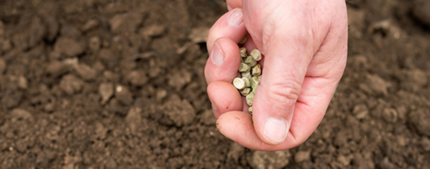
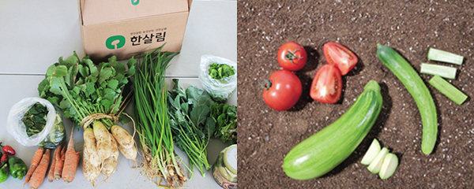
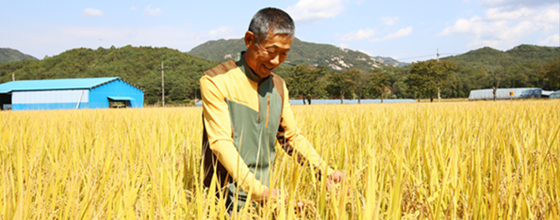
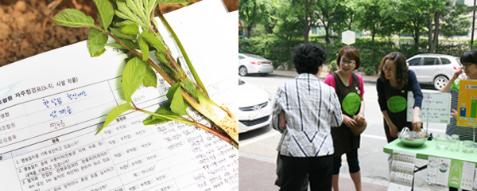
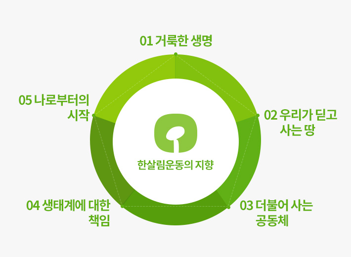

한살림은?
지구를 살리는 뜻깊은 생활 실천
한살림은 사람과 자연, 도시와 농촌이 생명의 끈으로 이어져 있다는 생각에서 자연을 지키고
생명을 살리는 마음으로 농사짓고 물품을 만드는 생산자들과 이들의 마음이 담긴 물품을 이해하고 믿으며 이용하는 소비자들이 함께 결성한 생활협동조합입니다.

기후변화와 자연재앙이 날로 심각해지고, 시장 개방이 확대되면서 우리 농업의 자급 기반이 더욱 위태로워지고 건강한 밥상을 차리는 일이 날로 힘겨워지고 있습니다.
한살림은 생명농업을 바탕으로 생산자와 소비자 간의 직거래 운동을 펼치며 어려운 이웃과 더불어 살아가려는 노력,
절제된 소비, 자연과 조화를 이룬 생활문화를 통해 생명을 살리고 지구를 지키는 뜻깊은 생활 실천을 하고 있습니다.
1. 밥상살림

- 자연생태계와 조화를 이루며 먹을거리를 생산하고 이웃과 나눕니다.
- 먹을거리의 기준을 깐깐하게 따집니다.
2. 농업살림

-
농촌회원들은 생명이 살아 있는 농업을 실천하며 우리 농업과 농촌 공동체가 지속되게 힘쓰고 도시 회원들은 다양한
교류와 협력을 통해 농촌 회원들을 응원하며 생명 농업을 위해 함께 나아갑니다.
-
지구를 살리는 더 나은 방법은 없을까?�
도시 소비자들과 함께 자급사료로 소를 키우고 소똥으로 논밭을 기름지게 하는 지역생태순환농업을 시작했습니다.
3. 생명살림

- 한살림은 사람과 사람, 사람과 자연이 조화로운 생명세상을 위해 노력합니다.
-
모심과살림연구소와 도서출판한살림을 통해 생명사상을 연구하고 관련서적을 발간하며 대안적인 사회를 지향하는 강좌를 진행하고 있습니다.
-
온실가스와 탄소배출을 줄이기 위한 가까운 먹을거리 운동과 공급 박스 및 병 재사용 운동을 하고 있습니다.

- 우리는 우리 안에 모셔진 거룩한 생명을 느끼고 그것을 실현합니다.
- 우리는 우리가 딛고 사는 땅을 내 몸처럼 생각합니다.
- 우리는 지역의 이웃과 생산자와 소비자를 가족으로 생각합니다.
- 우리는 우주 생명의 일원으로서 생태계에 책임지고자 합니다.
- 우리는 더불어 사는 삶을 위해 나부터 시작합니다.